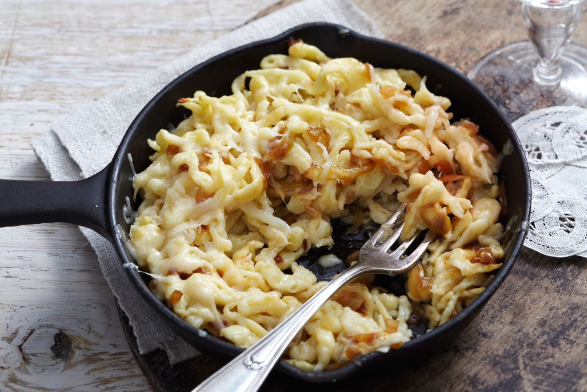

Kässpätzle
Das Rezept für Kässpätzle so wie es meine Oma im Allgäu immer gemacht hat. Wie viel Spätzle man machen muss, kommt auf den Hunger und die Personenanzahl an, da muss man etwas ausprobieren.

Für die Spätzle
Der Käseteil
- 250g Käse (Schweizer + 1/2 Ecke Romadour
- Butterfett
- Zwiebel
- Die Spätzle kochen, indem man die Zutaten dafür mit so viel Wasser kombinieren, das es einen zähen Teig ergibt.
- In kochendes Wasser mit Spätzlereibe reiben, wenn sie nach oben schwimmen, abschöpfen
- Die abgeschöpften Spätzle in eine Schüssel und bei 40 Grad in den Ofen, Käse in Schichten dazwischen geben.
- Butterfett erhitzen, Zwiebeln bräunen und heiß über die fertigen Kässpätzle geben.